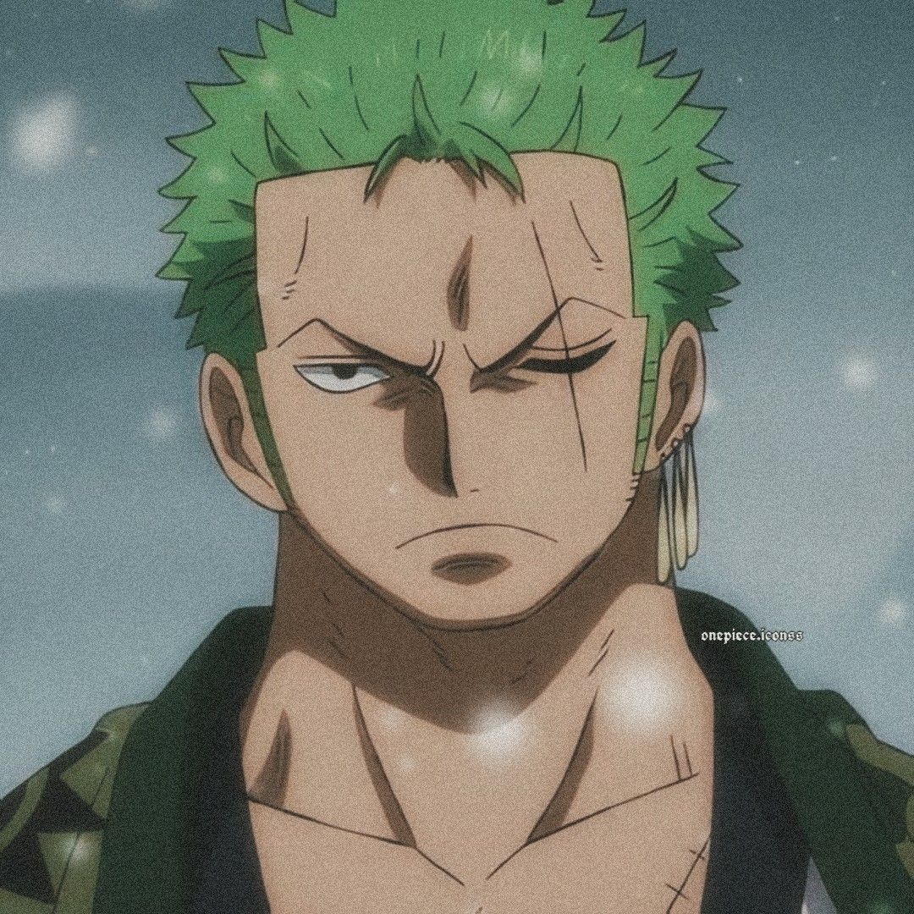

Perfiles
De One Piece
|

Nombre Completo:Roronoa Zoro Edad:21 años OcupaciónEspadachín Historiaes el combatiente principal de los Piratas de Sombrero de Paja, uno de sus dos
espadachines y uno de los oficiales principales de la Gran Flota de Sombrero de
Paja, así como un antiguo cazarrecompensas. |